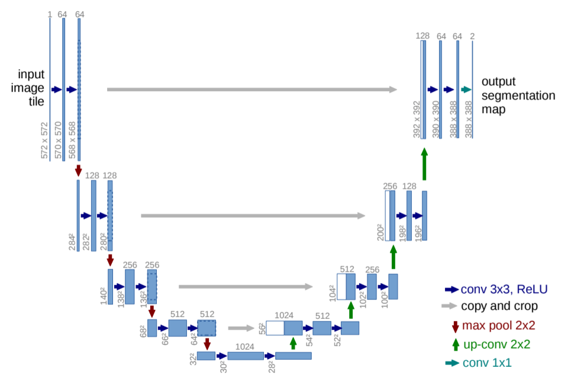
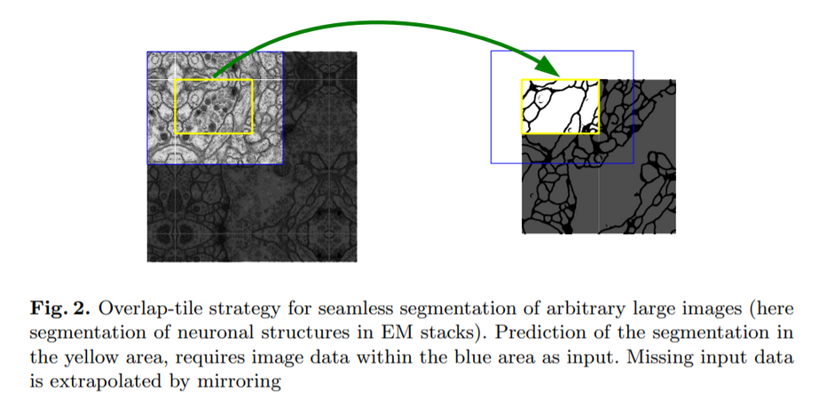

UNet
Table of Contents
1. UNet
https://arxiv.org/pdf/1505.04597.pdf 2015/05
UNet 是一个主要针对医疗影像 (biomedical image) 语义分割的模型
1.1. Network

UNet 也是一个标准的 encoder-decoder 结构, 但有一些需要注意的地方:
- 所有的蓝色的 conv 3x3 都是 valid padding, 导致 encoder 和 decoder 的对应部分尺寸不一致
- 灰色的 `copy and crop` 类似于 resnet 的 skip connection, 但使用的是针对 channel 的 concat 而不是直接相加. 另外, 因为 concat 的两部分的 shape 不一致, 所以需要把大的 crop 成小的
valid padding 也导致最终输出与 input 尺寸不匹配 (input: 572x572, output 388x388). 这个是作者有意为之, 这个策略在原论文中称为 overlap_tile, 具体作法是:

即模型要求输入一个比实际大一些的图片, 避免在 feature map 上用无意义的 0 来 padding
Backlinks
DeepLab (DeepLab > DeepLabV3+ Network): DeepLabV3+ 参考了 UNet 的 encoder-decoder 结构:
Semantic Segmentation (Semantic Segmentation > Overview): - (b) encoder-decoder 结构, 例如 UNet
Semantic Segmentation (Semantic Segmentation > UNet): UNet